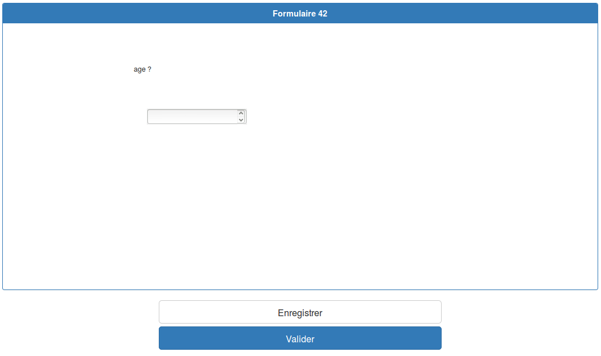

suivant: Modifier votre réponse monter: Répondre précédent: Répondre Table des matières
|  figureZone de réponse |
Après avoir rempli les champs, vous avez deux possibilités, enregistrer la réponse pour la modifier plus tard ou la valider, dans ce cas elle ne sera plus modifiable.